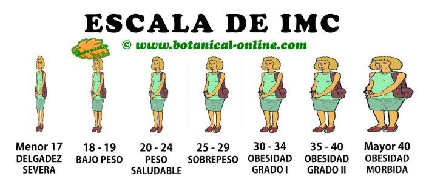
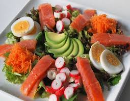
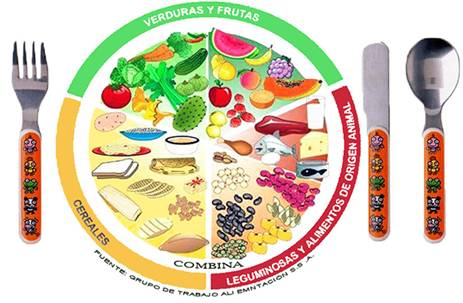

Recomendaciones
Peso Bajo
Los que son extremadamente delgados
tienden a tener un sistema inmune más
débil, lo cual los hace más susceptibles
a infecciones, y a que cuando se
enfermen su recuperación sea más lenta
y sufran más complicaciones.
La composición del cabello, dientes
piel y uñas también se ve en detrimento
1. Lleve registro de lo que come
Lo ideal es que escriba por unos 3 días
todo lo que come con detalle, las horas,
el tipo de comida, y cantidad. Esto le dará
una idea de que debe de cambiar
(por ejemplo, si brinca comidas), y cuánto aumentar.
Si con lo usual mantiene
peso, ya sabe que debe aumentar a partir de esto.
Si un registro se le complica, al menos realice un
análisis a conciencia de sus
patrones usuales.
2. Haga comidas regulares
Regla # 1, no trate de llenarse con solo 2 ó 3 comidas al día.
Lo ideal es realizar
varias comidas pequeñas y frecuentes. Para muchos
también esta el problema
de que tienen poco apetito, por lo que con una comida grande
probablemente
no querrá comer en el resto del día.
Lo ideal es realizar varias comidas
sin dejar más de 3 horas sin comer
3. Mantenga siempre a la mano snacks saludables
Planee con anticipación para que siempre tenga que comer.
4. Aumente su consumo de proteínas magras
Definitivamente para formar músculo necesita aumentar proteína, pero
recuerde que no sólo se trata de cantidad, sino también calidad.
Las proteínas de mayor calidad, son las de origen animal, ya que poseen todas
las unidades que su cuerpo requiere para aumentar masa muscular. Procure
que sean bajas en grasa, ya que la grasa asociado a los alimentos de origen
animal, es la saturada que favorece el aumento en los niveles de colesterol.
La proteína de mayor calidad es el huevo, seguida de la proteína de la leche.
En cada comida incluya una fuente de proteína
Estás son las mejores fuentes:
• Huevo
• Leche descremada y derivados (yogurt, quesos)
• Carne de res magra
• Pescado y mariscos
• Pollo y pavo sin piel
• Embutidos de jamón light y de pavo.
5. Consuma más grasas saludables
Las grasas saludables, son las de origen vegetal principalmente, como aceites
vegetales
• Linaza o nueces adicionadas a su cereal
• Nueces como meriendas combinadas con frutas deshidratadas
• Aceites como aderezos en las ensaladas
• Ensaladas y platos con aguacate
• Batidos con nueces o linaza
• Sándwich con aguacate y aceitunas
6. Empiece bien su día
Se ha demostrado que el consumo de proteínas de alta calidad como las del
huevo y la leche en las horas de la mañana favorecen su aumento de masa
muscular.
Empiece su día con huevos revueltos, acompañados de un batido de frutas con
leche o yogurt.
7. Hidrátese con calorías
Jugos de frutas, o batidos con leche además de adicionarle calorías le dan
abundantes vitaminas, minerales, y en el caso de la leche proteínas de calidad.
Evite las bebidas sin calorías, ya que le llenan sin aportarle energía.
8. Evite consumir mucho líquido con las comidas
Esto puede llenarle fácilmente estropeando su apetito.

Para bajar peso es necesario un tratamiento integral que garantice un pérdida
a largo plazo y de forma progresiva, teniendo en cuenta todos
los factores implicados: grado de sobrepeso, tipo de alimentación
nivel de actividad física, motivación para cumplir el tratamiento, etc.
No olvide que perder peso es, por encima de todo, una cuestión de salud.
Valores estos dos puntos muy importantes:
¿Cuál es su peso saludable?. Un poco significa mucho.
Una pérdida del 5-10 % de su peso actual aportará grandes
beneficios a su organismo, además de mejorar notablemente su aspecto.
¿Qué plazo es el adecuado?. Una pérdida excesivamente rápida no es sana ni realista.
Controle su peso regularmente con el profesional de su confianza, donde:
Le informará de su peso inicial, peso ideal, y pesos y objetivos a alcanzar.
Le ofrecerá controles programados para los próximos meses.
La obesidad es un problema de salud. Es una enfermedad
en sí misma causante a su vez de numerosas complicaciones: hipertensión, diabetes,colesterol...
La obesidad no es un problema estético. Lo peor es, justamente, lo que no se ve.
Las calorías en exceso y la grasa que comemos se convierten en grasa corporal.
Su problema requiere un tratamiento multifactorial:
Alimentación equilibrada con bajo contenido en grasas.
Incremente su actividad física. Muévase y evite el sedentarismo.
Su médico descartará que su exceso de peso sea secundario a un problema médico que precise tratamiento.
Le ofrecerán apoyo psicológico y solo cuando sean necesario alguna medicina.
Consejos para una buena alimentación
Elija alimentos con poca grasa.
Reduzca en consumo de azúcar.
Reparta su alimentación en 5 comidas al día: desayuno, media mañana, comida,merienda y cena.
No alterne períodos de ayuno con comidas abundantes.
*No coma entre comidas.
Coma sentado, despacio y mastique muy bien los alimentos. Dé bocados pequeños,con pequeñas cantidades.
Entre bocado y bocado deje los cubiertos sobre la mesa.
Coma en un lugar concreto, no coma caminando, en lugares improvisados o de paso.
Mientras coma no lea ni vea la televisión.
Disminuya el consumo de carnes rojas y aumente el de pescados.
Consuma verduras y hortalizas en abundancia.
Tome de 2 a 3 piezas de fruta al día. Evite aquellas
con abundante contenido en azúcar: plátano, uvas, higos, cerezas, nísperos, chirimollas...
Beba abundante agua, entre 1.5 y 2 litros al día.
Evite o limite el consumo de alimentos fritos o cocinados con excesiva grasa.
Esconda los alimentos ricos en calorías.
Tenga a mano tentempiés más saludables: verduras, lácteos desnatados, fruta...
Consejos para realizar la compra
Compre sin tener hambre.
Con la lista hecha previamente.
Vaya con frecuencia a la tienda (despierta menos interés por las novedades o diseños atractivos).
Evite platos preparados o precocinados.
----> ----> 